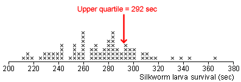
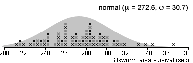

Estimating other parameters of a normal population
In normal populations, the mean, µ, is the parameter that is most often estimated. However numerical distributions have other parameters that may be of interest. For example,
These parameters can be estimated using the corresponding summary statistic from a random sample, but the error distribution may be difficult to obtain theoretically.
Simulation
Since the parameters µ and σ are unknown, we cannot perform a simulation with repeated samples from the actual population. However we can conduct a simulation from our best estimate of the population distribution — i.e. replacing µ and σ with the sample mean and standard deviation.
We repeatedly take samples of size n from this approximate population and evaluate the estimation error from using each sample. (Since we know the population from which we are sampling, we know the population parameter and can find the estimation error.)
The standard deviation of these errors is the approximate standard error of the estimator.
Silkworm poisoning
In an experiment to investigate the toxic action of arsenic, 80 fourth-instar silkworm larvae weighing between 0.41 and 0.45 grams were given 0.10 mg of sodium arsenate per gram of body weight.
How long will one in four of the larvae survive?
In other words, we want to estimate the upper quartile of the survival times.

The above dot plot shows the survival times and their upper quartile. Assuming that these silkworms are a random sample, ...
... we estimate that the population upper quartile is 292 seconds — i.e. we predict that 1 in 4 silkworms of this type will survive for 292 seconds.
Approximate population
The survival times have a fairly symmetric distribution so it is reasonable to try simulating random samples from a normal population. The diagram below shows a normal distribution whose mean and standard deviation equal those of our actual data.

We use this normal distribution as a population from which to sample 80 values — simulated survival times for 80 silkworms given the same dose of arsenic. For the normal (272.6, 30.7) distribution, the upper quartile is 293.3, so this is the 'target' parameter that is estimated by our simulated samples.
The diagram initially shows a sample of 80 survival times. The error is the difference between the sample upper quartile and the underlying population parameter, 293.3 sec.
Click Take sample a few times and observe that the error varies from sample to sample.
Click Accumulate then take 100 or more samples (survival times of 80 silkworms). The error distribution is built up as a stacked dot plot at the bottom of the diagram.
The distribution of errors gives an idea of how far the upper quartile of our actual survival times (292 sec) is likely to be from the true unknown population upper quartile.
Click Estimate s.e. and bias to see the standard deviation and mean of the error distribution.
Understanding accuracy of estimate
In the simulation, you should have observed that the bias of the estimator is small, so we will treat it as zero.
The estimated standard error in your simulation was probably just over 4 sec. We can use the 70-95-100 rule-of-thumb to help interpret its value — the error has approximately 95% chance of being within 2 s.e. of zero and will be almost certainly within 3 s.e. of zero.
The error in our estimate of the population upper quartile, 292 sec, is likely to be less than 8 sec and will almost certainly be less than 12 sec.